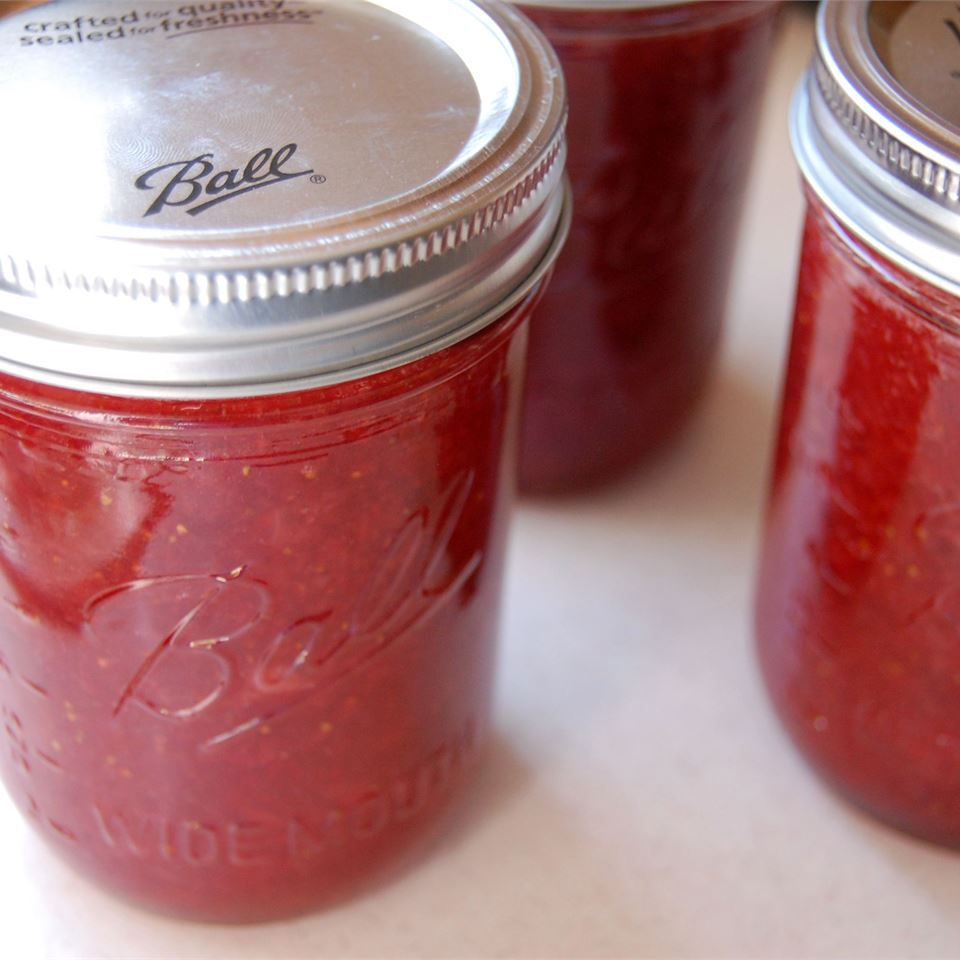

Strawberry Jam

Description
An easy recipe for strawberry jam that is not too sweet, perfect on toast and ice cream!
Ingredients
- 1 kilogram fresh strawberries
- 300 grams white sugar
- juice from 1/2 lime
Directions
- Wash all the strawberries and drain. Pick the stems.
- Add washed strawberries into a large, wide pot, follow by white sugar.
- Put on stove. Cook over medium-high heat.
- Stir with a wooden spoon until well-mixed. After the mixture boil, reduce heat to low.
- Keep stirring. When the mixture reduces by half--this should take around 30-45 minutes,add lime juice. At this point, the jam should have the consistency of porridge.
- Cook for five more minutes. Take off the heat and put into jars.